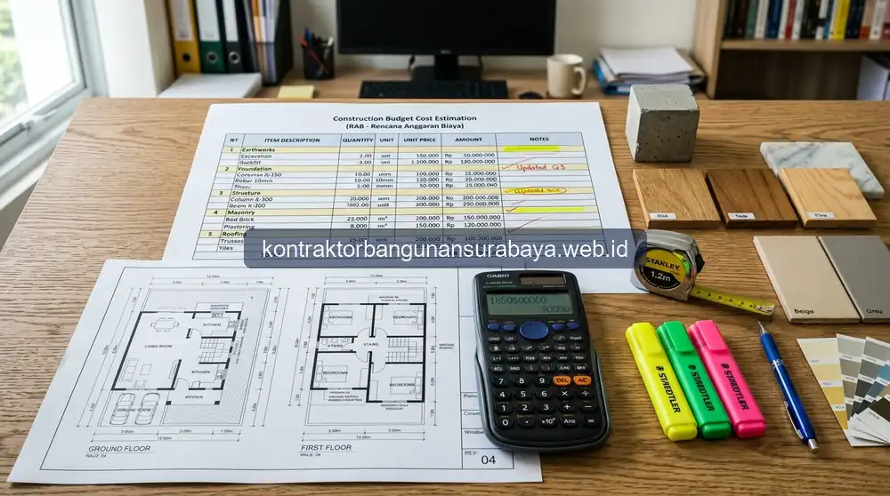

1. Tips Negosiasi dan Evaluasi Penawaran RAB dari Beberapa Kontraktor
Bagaimana cara mengevaluasi dan bernegosiasi RAB dari beberapa kontraktor?
Mengevaluasi dan bernegosiasi RAB dari beberapa kontraktor sebaiknya dilakukan dengan membandingkan rincian per item pekerjaan, bukan hanya melihat angka total penawaran, serta memastikan spesifikasi material yang ditawarkan setara sebelum membandingkan harga. kontraktorbangunansurabaya.web.id membagikan panduan praktis ini agar pemilik proyek di Surabaya dapat mengambil keputusan yang lebih tepat, bukan sekadar memilih penawaran termurah.
Ketika merencanakan proyek pembangunan rumah baru, renovasi ruko, maupun bangunan komersial, menerima proposal penawaran harga dari 2 hingga 4 kontraktor adalah langkah lumrah. Namun, jebakan terbesar yang sering dialami pemilik bangunan adalah langsung melompat ke lembar rekapitulasi akhir dan memilih angka nominal terendah tanpa membedah isi lembar penawaran secara cermat.
Kunci Keberhasilan Evaluasi Penawaran
Rencana Anggaran Biaya (RAB) yang solid mencerminkan ketepatan hitungan volume, kejelasan merk material, dan kejelasan lingkup tanggung jawab kerja dalam paket desain arsitektur dan RAB terintegrasi.
2. Membandingkan RAB Berdasarkan Spesifikasi yang Setara
Perbandingan RAB antar kontraktor hanya bermakna apabila spesifikasi material dan lingkup pekerjaan yang dibandingkan setara, karena penawaran dengan angka lebih rendah bisa jadi menggunakan spesifikasi material yang lebih rendah pula atau tidak mencakup item pekerjaan tertentu yang justru dicantumkan kontraktor lain.
Meminta rincian asumsi yang mendasari RAB, seperti harga material dan upah yang berlaku pada saat penawaran dibuat, juga membantu memahami mengapa satu penawaran bisa berbeda cukup jauh dari penawaran lain meski lingkup pekerjaannya terlihat serupa di permukaan.
| Parameter Evaluasi RAB | Fokus Pemeriksaan Kritis | Dampak Jika Diabaikan |
|---|---|---|
| Spesifikasi & Merk Material | Kesesuaian merk semen, diameter besi ulir SNI, mutu ready mix, dan jenis keramik/granit | Penurunan mutu struktur atau daya tahan material finishing cepat rusak |
| Kelengkapan Item Pekerjaan | Cek apakah galian, urugan tanah, instalasi pipa air kotor, dan bak kontrol sudah termasuk | Timbul biaya tambahan (addendum) tak terduga saat pekerjaan fisik dimulai |
| Akurasi Volume (BOQ) | Verifikasi perhitungan volume m², m³, atau unit dengan lembar gambar kerja DED | Klaim volume kurang di tengah jalan yang berujung pembengkakan tagihan |
| Standar Upah & Manajemen | Keahlian tukang spesialis, pengawasan mandor harian, dan sistem pembuangan puing | Pengerjaan lambat, hasil finishing bergelombang, dan area proyek berantakan |
Membuat daftar item pekerjaan standar yang harus dijawab oleh setiap kontraktor yang memberikan penawaran, lengkap dengan spesifikasi minimal yang diinginkan, membantu proses perbandingan menjadi lebih adil dan objektif dibanding hanya melihat total angka penawaran di halaman akhir dokumen.
3. Strategi Negosiasi yang Wajar Tanpa Mengorbankan Kualitas
Negosiasi harga sebaiknya difokuskan pada margin keuntungan dan efisiensi proses kerja, bukan dengan meminta penurunan spesifikasi material struktural, karena penurunan spesifikasi pada elemen struktural demi menekan harga dapat berisiko terhadap keamanan bangunan dalam jangka panjang.

Strategi Negosiasi yang Sehat
- Substitusi Material Finishing: Mengganti brand granit atau sanitair ke tier setara yang memiliki promo distributor.
- Optimalisasi Metode Kerja: Penggunaan bekisting reusable atau sistem scaffolding modular yang lebih hemat waktu.
- Margin Volume Borongan: Menegosiasikan diskon paket all-in jika lingkup pekerjaan mencakup hingga bangun rumah baru penuh.
- Jadwal Pembayaran Progresif: Menawarkan termin pembayaran tepat waktu sebagai penyeimbang cashflow kontraktor.
Kesalahan Negosiasi yang Berbahaya
- Memangkas Dimensi Besi: Mengurangi diameter besi tulangan atau jarak sengkang kolom beton.
- Menurunkan Mutu Semen/Beton: Memakai semen oplosan atau ready mix mutu rendah untuk dak lantai 2.
- Menekan Harga Terlalu Ekstrem: Memaksa kontraktor menerima harga di bawah modal yang berisiko proyek mangkrak.
- Membayar DP Besar Tanpa Jaminan: Menyetorkan uang muka 50% di awal tanpa adanya tahapan opname fisik.
Menanyakan opsi alternatif material dengan tingkat harga berbeda namun fungsi setara juga menjadi cara negosiasi yang lebih sehat, dibanding memaksa kontraktor menurunkan harga pada spesifikasi yang sama, yang berpotensi membuat kontraktor mengurangi kualitas pengerjaan demi menjaga margin keuntungan mereka.
Menyepakati metode pembayaran yang wajar, misalnya berdasarkan progres fisik pekerjaan yang telah diverifikasi, juga menjadi bagian dari negosiasi yang sehat, dibanding permintaan pembayaran di muka dalam jumlah besar yang berisiko merugikan pemilik proyek apabila terjadi wanprestasi.
4. Pendampingan Evaluasi Penawaran yang Objektif dari Kontraktor Bangunan Surabaya
Selain aspek harga, evaluasi penawaran RAB juga sebaiknya mempertimbangkan rekam jejak dan pengalaman kontraktor, karena harga yang kompetitif tidak banyak berarti apabila kontraktor tersebut tidak memiliki riwayat penyelesaian proyek yang konsisten tepat waktu.
Keunggulan Evaluasi Transparan Bersama Kami:
- Penyusunan RAB Pembanding Independen: Memberikan patokan harga pasar riil di Surabaya untuk setiap item pekerjaan sipil dan finishing.
- Verifikasi Kelayakan Teknis: Memastikan seluruh dimensi struktur aman menurut kaidah standar teknik sipil SNI.
- Klausul SPK & Garansi Jelas: Menjamin perlindungan hukum pemilik bangunan melalui kontrak kerja tertulis dan garansi struktur resmi.
- Sistem Opname Lapangan Terbuka: Validasi mingguan sebelum pembayaran termin berikutnya dicairkan.
kontraktorbangunansurabaya.web.id membantu pemilik proyek menyusun RAB pembanding yang transparan sejak awal, sehingga apabila pemilik proyek ingin membandingkan dengan penawaran dari kontraktor lain, terdapat acuan spesifikasi yang jelas untuk memastikan perbandingan dilakukan secara adil dan setara.
Pada akhirnya, keputusan memilih kontraktor sebaiknya mempertimbangkan keseimbangan antara harga, kualitas, dan rekam jejak secara bersamaan, bukan hanya berfokus pada salah satu aspek saja, agar hasil akhir proyek benar-benar sesuai dengan ekspektasi dan anggaran yang telah disiapkan.
Pelajari Dasar Perhitungan Biaya Mandiri
Kemampuan menyusun dan membaca RAB secara mandiri akan sangat membantu proses ini. Pelajari lebih lanjut mengenai cara menghitung RAB bangunan agar Anda lebih percaya diri saat mengevaluasi penawaran dari berbagai kontraktor.
5. FAQ Seputar Evaluasi dan Negosiasi Penawaran RAB
6. Konsultasi Gratis Sekarang
Ingin berdiskusi lebih lanjut mengenai kebutuhan konstruksi bangunan Anda di Surabaya? Hubungi tim kami melalui WhatsApp di 0889-8964-3555 untuk konsultasi awal tanpa biaya bersama kontraktorbangunansurabaya.web.id.
Konsultasi WhatsApp di 0889-8964-3555Reza Maulana Nehru
Praktisi & Penulis Edukasi Konstruksi Bangunan di Kontraktor Bangunan Surabaya. Berfokus pada estimasi biaya konstruksi, audit RAB, manajemen pengadaan material, dan standarisasi pelaksanaan proyek di Surabaya dan sekitarnya.